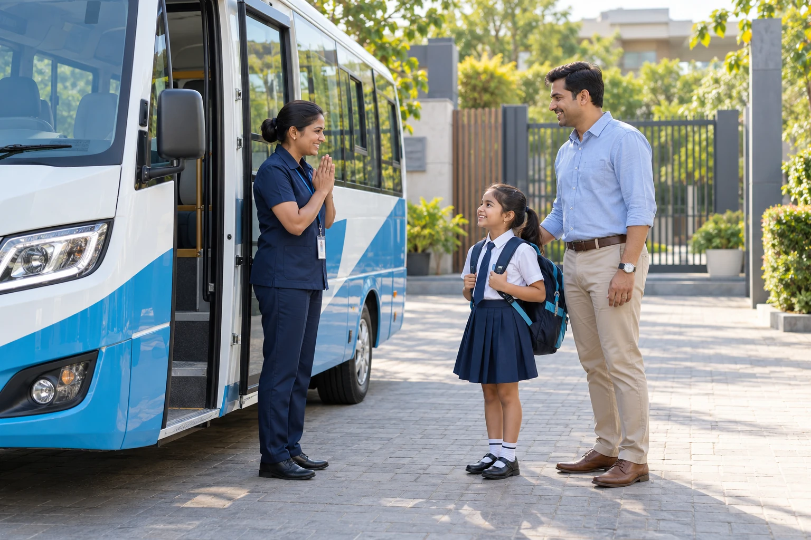
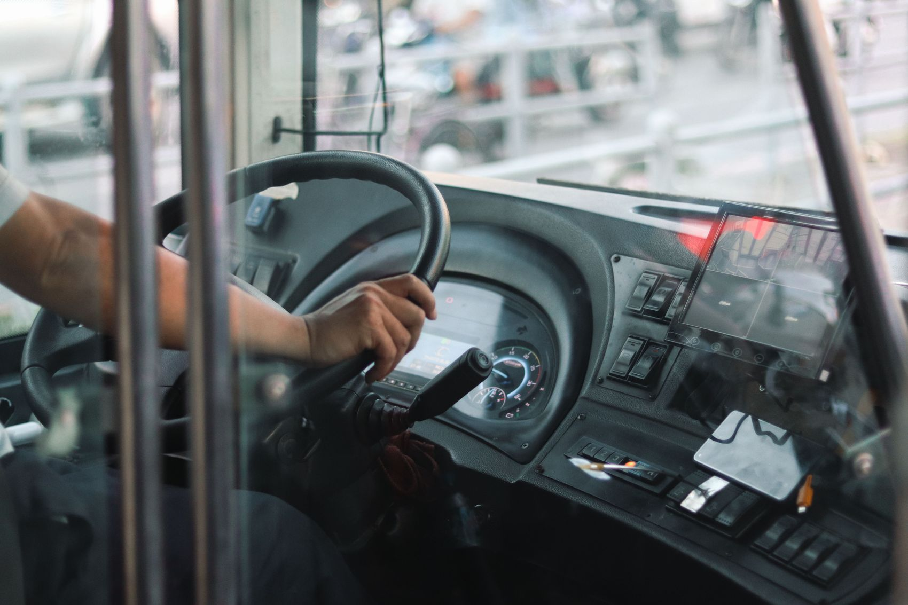
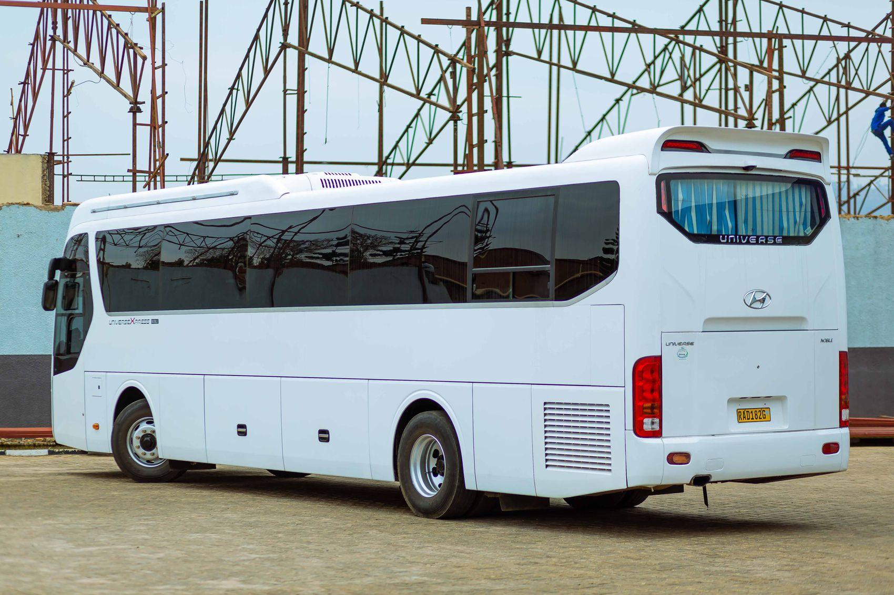

Vehicle readiness
Daily vehicle checks, maintained safety equipment, and a tidy, ready-to-travel cabin.
CARE IS THE WHOLE POINT
Safety is a series of thoughtful actions, repeated every school day. Here’s the approach behind a more reassuring journey.
Explore our safety approach
Care before, during & after the ride.BEFORE THE FIRST HELLO
These are proposed operating standards for this sample service. Actual checks, staffing and compliance must be verified with the chosen operator and school.
Daily vehicle checks, maintained safety equipment, and a tidy, ready-to-travel cabin.
Driver verification, suitable training, and an attendant briefed on the children’s needs.
Agreed stops, clear collection arrangements, and up-to-date emergency contacts.
CARE IN MOTION
A familiar routine helps children feel comfortable. A clear process helps the adults responsible for them stay coordinated.

An attendant supports boarding, checks the planned stop and helps children settle.
Children remain seated, belongings stay secure and the driver focuses on the road.
Arrival is recorded and younger children are handed over according to the agreed school or parent arrangement.
The cabin is checked after the final drop-off so no child or belongings are overlooked.
8:05 am · Morning journey completed
Estimated arrival updated for your stop.
INFORMATION THAT REASSURES
Boarding, arrival and journey updates put the moments that matter where you can see them. The parent portal also keeps emergency contacts and absence planning close at hand.
Live location and notifications require a real transport data connection. Explore the experience with sample data in our dashboard.
See a sample school dayWORKING TOGETHER
Clear information between families, schools and the transport team helps everyone plan well.
Confirm the agreed stop, authorised collectors and emergency contacts. Share relevant access or travel support needs directly with the school and operator through an appropriate private channel.
Tell the transport team before the pickup. The demo portal includes an absence planner, but it only saves locally in your browser and does not notify anyone.
A connected service should notify parents and show an updated estimate. Do not rely on this website’s demonstration map for a real child’s location or time-sensitive travel information.
A real operator should maintain an agreed escalation and emergency response plan with the school. This demonstration has no dispatch or emergency service; use your local emergency service for an immediate emergency.

EVERY GOOD JOURNEY BEGINS WITH TRUST
Explore the approach, share your needs, and make an informed school transport choice.
Let’s talk safetyBEFORE. DURING. AFTER. ALWAYS WITH CARE.